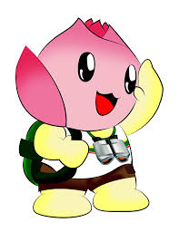

Hệ Mặt Trời
Nhấn vào các nút bên dưới để khám phá kiến thức vũ trụ cùng Bé Sen!
Tốc độ mô phỏng
Trái Đất

Chào bạn! Mình là Bé Sen. Hãy cùng mình khám phá những điều thú vị về hành tinh xanh nhé!
Quỹ đạo
Mặt trời
Độ nghiêng
Tạm dừng